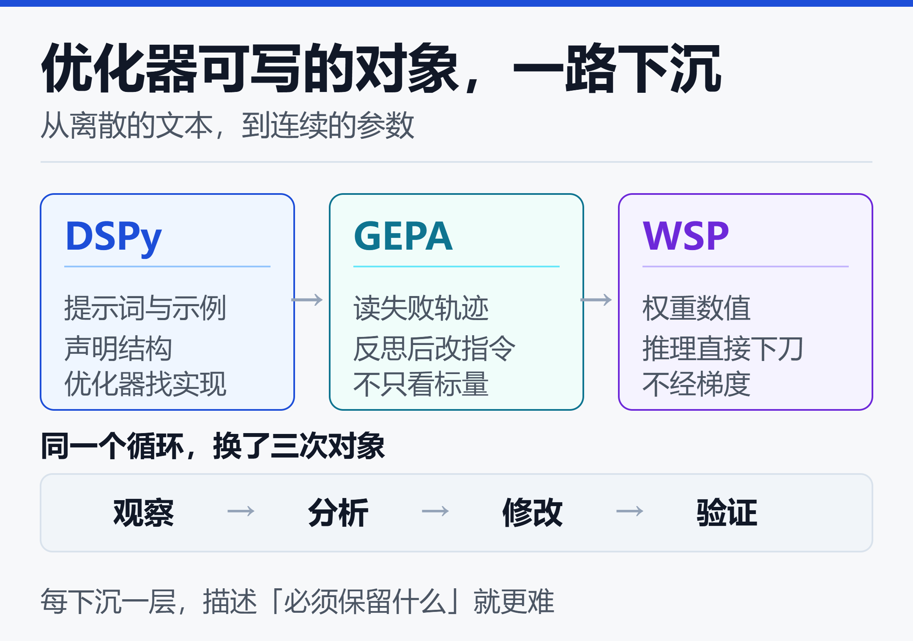
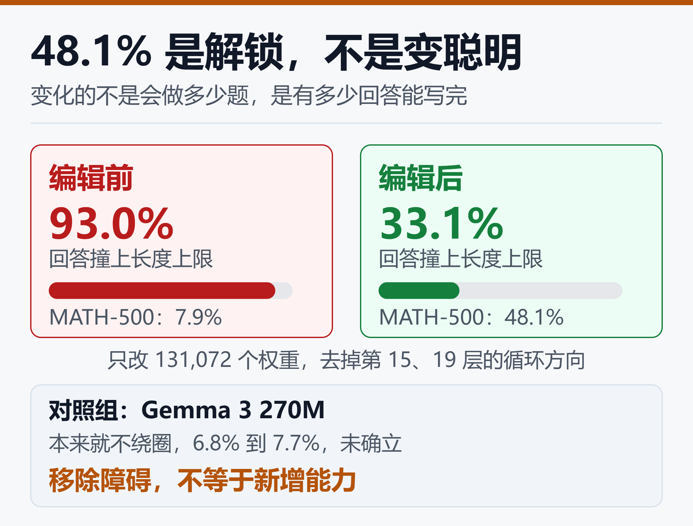
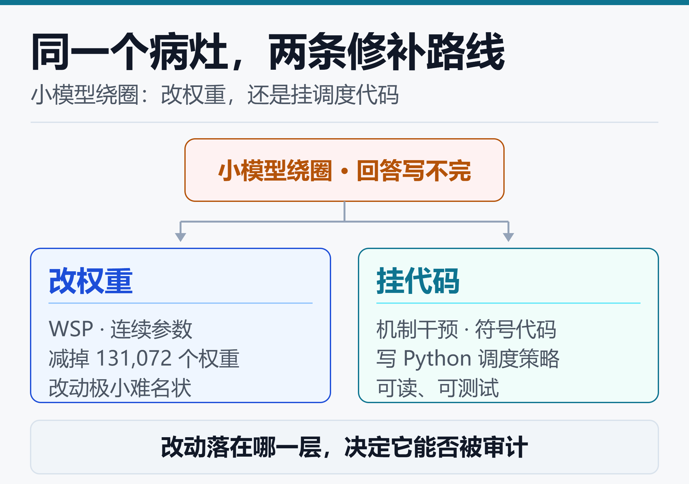

从 DSPy 到权重空间编程：推理驱动优化闯进连续参数空间
131,072 个数字，占一个 8 亿参数模型的 0.016%。
改完这 13 万个权重，Qwen3.5-0.8B 在 MATH-500 上的成绩从 7.9% 变成 48.1%，GSM8K 从 13.8% 变成 67.1%，连跟数学无关的指令遵循 IFEval 也从 21.0% 变成 62.3%。
没有梯度，没有训练循环，没有微调数据，没有优化器。
这是 MIT CSAIL 在 2026 年 11 月 2 日公开的一组实验。四位作者里有一个熟悉的名字：Omar Khattab，DSPy 的作者。三年前 DSPy 喊出 Program, Don't Prompt，主张让优化器去决定提示词该怎么写；三年后，同一条思路被推到了一个此前没人敢碰的地方——把神经网络的权重当成可以读、可以改的程序。
他们给这件事起名叫权重空间编程（Weight-Space Programming）。
一周之内，它先被顶上技术社区热榜，24 小时里同时迎来复现和拆解，又被另一篇研究写进相关工作的对照系。要说清的是三件事：定义排除了什么、48.1% 怎么来的、这条线把优化器推到了哪一步。
一、先把定义钉死：它排除了什么
原文的定义很窄，值得逐字拆开：
通用大语言模型直接读取和写入一个网络的权重，不经优化器，尤其不经梯度下降，围绕一段自然语言规格，有时甚至完全没有环境反馈。
窄就窄在三个排除项上。
- 不是让模型写训练代码。LLM 写训练脚本、调超参、搜架构，这几年前已经是日常；那条路里，动权重的仍然是 Adam 或 Muon。
- 不是专门训练来读权重的模型。超网络、权重生成器属于这一类，需要一个专门为这个任务训出来的网络。
- 不是可解释性工具箱里的现成算子。ROME、MEMIT、方向消融、激活引导都能改权重，但方向由人类研究员先找出来。
权重空间编程要求的是一个通用模型、原样使用，靠推理判断「这一部分在算什么、应该算什么」，然后自己下刀。
这条边界此前几乎没人越过去，理由很朴素：权重有三种来源——优化器写、专门训练的模型写、编译器从形式化程序生成。人类可以手改源码，所以让 LLM 手改源码说得通；人类不可能手改几亿个浮点数，于是权重一直留在「只能用梯度碰」的地盘里。
Software 2.0 的说法流行了快十年：程序就是权重，优化器就是编译器。权重空间编程想动的，是后半句。
二、从 DSPy 到 WSP：一条被推了三年的线
DSPy 诞生于 2022 年底，口号是 Program, Don't Prompt。它针对的问题很具体：做一个问答系统，要检索、判断、生成，传统做法是人工反复打磨每一步的提示词和示例。
DSPy 的做法像编译器：开发者先声明模块结构、输入输出签名和评价指标，至于每个模块用哪句指令、放哪几个示例，交给优化器去搜。
它真正改变的不是提示词质量，而是谁来决定实现细节。
后来 GEPA 把这条路又往前推了一步。普通优化器拿到一次失败，只得到一个损失值或奖励值；GEPA 会读失败轨迹，看出「这道题错在漏了边界条件」，然后据此改写指令。观察现象、提出解释、修改实现、重新测试——这已经是人类调试程序的循环，只不过执行者换成了模型。
这类方法可以统称为推理驱动的优化：优化器利用对任务的理解，而不只是利用标量反馈，决定下一步怎么改。
关键在于，过去三年里这套循环能碰的东西全是离散的：提示词、示例、代码、Agent 流程、训练脚本。权重是连续的、高维的、可微的，天然归梯度下降管。
权重空间编程把同一个循环搬进了权重空间。小车上坡那个实验最能说明差别：只从奖励信号出发，优化器得在参数空间里碰出一套更好的控制策略；Astra 却从任务本身推导出「先后退助跑、再加速冲坡」，然后把这段逻辑变成网络里的一条计算通路。
它用上了梯度里根本没有的信息：这个任务为什么会失败，以及什么样的算法能解决它。
从原理上看，可微性只说明这里存在一种极其高效的优化方法，并不排斥别的方法利用任务结构找到有效方向。DSPy 让提示词成为编译的产物，WSP 想让权重也成为编译的产物。

这条脉络的要点不是「模型越来越强」，而是优化器可写的对象一路下沉：从文本到代码，从代码到参数。每下沉一层，描述目标和约束的难度就上升一层。
三、八组实验：读、修、写，和一条划得很清的边界
原文是 8 组编号实验加 1 组对照，全部用 GPT-6 Astra 完成，日志公开。按「读、修、写」分成三类更好懂。
读。实验 1 给了四个结构完全相同的策略网络，10×10 网格、同一组五个动作、各 17,253 个权重，除了数值没有任何东西能区分它们。Astra 不看候选名单，四个游戏全答对，还指着第一层权重的分布解释挡板在哪一行。
实验 2 换成三个 12×12 的扩散模型，不许做前向计算，它认出了圆、方、三角，却把三个形状都画成轮廓——真实模型生成的是实心图形。这个「错」反而是最强的证据：它在读权重的几何结构，而不是偷偷跑了一遍网络。
实验 3 最硬。三个 720 万参数的字符级 transformer，分别用 Python 代码、日语罗马字、英文维基训练；研究者把输入层和输出层整个摘掉，只给中间四个模块，禁止把网络或任何一层跑在任何输入上。
Astra 两次尝试都答对了训练语种，并且点名的复制头与实测完全吻合，没有多冤枉一个头。它用的路径与已发表的一个方法一致，而提示里从未提过。
修。实验 4 是一辆卡在坡道上的小车。PPO 训了十亿步，收敛到「一路直冲然后卡死」，256 局零成功。Astra 拿到 171,664 个权重、场景描述和一段失败录像，一次回复、不许用工具，改了 3.5% 的权重：在网络里挂一条小通路，读车的位置和速度，先倒车、再加速，越过危险区后关掉通路把控制权还给原策略。1,024 局全部成功。
这个改法本身就说明了性质：不是重训，是在旧程序里补一段条件分支。
写。实验 5 把三个 MinAtar 游戏的权重全部清零，只给规则、源码和输入输出定义，不许试跑，让 Astra 用文本直接写出权重。Breakout 得分 517.4，PPO 训练五亿步是 25.3，约二十倍；但 Seaquest 53.1 对 88.9、Asterix 53.2 对 55.2，都输给了五亿步的 PPO。三个游戏都赢了一亿步基线。
这里有个不能忽略的不对等：Astra 拿到完整规则和源码，PPO 只能靠环境交互摸索。分数只能当参考，真正有意思的是生成过程——理解规则、设计策略、翻译成两层计算、再落成数值。
实验 6 把规模推到 148 万参数的 9×9 围棋网络，权重远超上下文长度，于是给了 Python 沙箱和 0 到 50 次前向预算。零次前向时，它写的网络赢过两个更小 PPO 网络的半数对局；给到 50 次，击败了同等规模、训练过两千万局的 PPO。
划边界的两组失败，比成功更值钱。实验 7 要它从权重里分辨哪个 Gemma 3 270M 被微调成了「谄媚」模型，四次尝试全败；放宽到只给注意力图、不给输出，三对全中。这说明纯权重读取暂时还撑不起行为审计。
| 故障形状 | 实验证据 | 是否值得试 |
|---|---|---|
| 重复绕圈 | 打满上限 93% | 值得，收益外溢 |
| 局部最优 | 小车 0 到 100% | 值得，单次生效 |
| 认定谄媚 | 只看权重全败 | 需要额外观测 |
| 到处差一点 | 6.8 到 7.7 | 不值得，别指望 |
对照组是 Gemma 3 270M：这个模型很少绕圈，只有 8.5% 的回答撞上 token 上限，Astra 看到的是算术错、代数变形错这类普通错误，没有可以关掉的单一组件。MATH-500 从 6.8% 最多动到 7.7%，作者自己判定「未确立」。
原文给了一句很克制的话：编辑权重可以移除遮蔽已有能力的障碍，但不能添加模型缺乏的能力。
四、48.1% 的真相：修的是 bug，不是数学能力
把实验 8 摊开看，头条数字的性质就变了。
Qwen3.5-0.8B 打开 thinking 模式后有个写在模型卡上的毛病：容易陷进重复推理，车轱辘话一直说到 32,768 token 上限。基线在 MATH-500 上有 93.0% 的回答根本走不到答案；前 96 个练习回答里，85 个直接撞墙。
所以 7.9% 不是「数学能力只有 7.9%」，而是「九成多的卷子没写完」。
Astra 拿到一个无 GPU 的 Python 内核、GSM8K 与 MATH 的练习题，以及 10 / 25 / 50 次前向预算，不许训练、不许梯度。它把绕圈定位到第 15 层和第 19 层 MLP 写出的一个方向，从这两层各 64 个输出列里减掉它，共 131,072 个权重。
| 前向预算 | MATH-500 | 打满上限 |
|---|---|---|
| 基线 | 7.9% | 93.0% |
| 10 次 | 12.3% | 87.2% |
| 25 次 | 14.1% | 86.4% |
| 50 次 | 48.1% | 33.1% |
GSM8K 同期从 13.8% 到 67.1%，IFEval 从 21.0% 到 62.3%。
这张表有两处比 48.1% 更值得读。第一，10 次和 25 次前向几乎没用，打满上限的比例只从 93% 挪到 87%，真正起作用的改动是在看得足够多之后才找到的——这不是「瞄一眼权重就改好」，而是一场带诊断、带反馈的长调查。公开日志里，成功的 50 次前向那一轮跑了 158 个对话轮次、80 次 Python 执行、约 20 小时。
第二，IFEval 涨得比数学还多。指令遵循和数学没有直接关系，却一起变好，正好符合「修的是绕圈」这个解释：绕圈不是数学特有的病。

图里的两栏对比是理解这组数据的关键：编辑前后变化的不是模型会做多少题，而是有多少回答能真正写完。Gemma 3 270M 的对照把这个判断钉死了——同一个手法，在原本不绕圈的模型上立刻失效。
因此更准确的说法是：这次编辑修掉了一个会毁掉整份答卷的缺陷，把本来就会做的题解封了。修缺陷本身很有价值，也确实能外溢到别的任务，但它和「把 0.8B 变聪明六倍」是两回事。
关于这一类缺陷本身，站内另有实测对比，可以顺手看你的推理模型还在原地转圈？死循环修复方案实测对比 2026。
五、24 小时祛魅：争议到底在争什么
11 月 2 日发布，11 月 3 日就有两份拆解上线，速度比多数论文复现都快。
spaCy 作者 Matthew Honnibal 的核心指控不是数据造假，而是实验条件被打包成了一个故事。他把八组实验按工具权限排成表：真正「原始浮点权重进上下文、无工具、不跑网络」的只有实验 1、2、4，网络规模 1.7 万到 17.2 万；凡是涉及真实语言模型的实验都用了 Python，作为头条的 Qwen 实验还额外跑了最多 50 批练习题。
他打了个比方：舞台魔术师用三种不同手法表演同一个戏法，观众却以为只有一种，于是每次表演都像在推翻你对原理的猜测。
Sean Goedecke 从另一头拆。这些小网络的输入通道是带标签的，第一层每个输入对隐藏单元有一个向量，三行 numpy 算 L2 范数就能画出热力图，凭玩家和移动物体的分布足以认出大半游戏。他把 Qwen 的修复归类为现成的方向消融与引导流程：写几段会绕圈和不会绕圈的文本、算出贡献最大的权重、削减再测试。
两位都没有否定工作量。Honnibal 明确说，一两年前的模型在这些任务上会全败；让一个模型被提示着去设计并执行人类机器学习工程师本来就会做的任务，这本身就是进展。争的是标题与摘要把两种能力焊成了一种。
复现侧给出的画面更复杂，也更有意思。
Simon Willison 用笔记本上一份 17GB 的量化 Qwen 3.8 27B，不给任何工具重跑实验 1，四个游戏认对三个，Freeway 失手；单次耗时 46 到 65 分钟，Pac-Man 那一轮烧掉 43,506 个推理 token。经 OpenRouter 调用的 Kimi K3.1 Pro 在 Breakout 上只用了 9 分 41 秒。他的结论很克制：推理轨迹「有趣但几乎读不懂」，一个拿纸笔的资深人类花够时间大概也能到，所以还不打算宣布源代码时代结束。
Hugging Face 的 Ahsen Khaliq 按公开日志用 sha256 重建了改后的两层权重，在单张 H200 上重跑完整 MATH-500，测出 51.0%，比原文的 48.1% 还高。另一份独立审计逐条核对日志，数字都能对上，但指出若干描述比实际操作更保守：「减去一个方向」实际是两个方向各自翻转并放大；「改 3.5% 权重」的改动量级远大于字面；头条结果来自单次运行，从未重复。
还有一份用 Claude Opus 5.5 做的探索性研究，把零样本权重读取解释为「局部算术加数据集先验」：模型能从批归一化统计量推出只训练了三步，却会在打乱 CIFAR-10 标签顺序后把类别判断全错。至少有一部分「读懂」，靠的是记住公开数据集的先验。
所以看这类 headline，有三个问题值得先问：
- 网络多大？是 1.7 万权重，还是 8 亿？
- 用了 Python 吗？还是只有一段纯文本？
- 改之前跑过练习题吗？跑了多少次？
三问之后，结论会稳很多：无工具读权重在小型网络上被独立复现了；「原生读写大模型权重」这个统一叙事，目前还没有被同等强度支持。
六、同一周的另一条路：DoubleAI 把 WSP 摆上对照系
11 月 6 日，Mobileye 创始人 Amnon Shashua 创立的 DoubleAI 发布《Can LLMs redesign themselves as they train?》。它在相关工作里明确引用了 11 月 2 日那篇，把它定位成「直接编辑权重」的代表，然后追问：既然模型已经能读写权重，为什么不让 agent 连架构本身一起接管？
这套方法叫机制干预。它把 coding agent 放进训练循环：用「幽灵梯度」找出网络靠调权重学不会的瓶颈层，现场生成几十个候选 Python 函数实测降误差效果，再把胜出函数挂在初始值为 0 的门控后面并入网络，由后续训练把门控推开。插入的瞬间，网络和原来完全一致。
| 维度 | 权重空间编程 | 机制干预 |
|---|---|---|
| 改动对象 | 权重数值 | 代码层与架构 |
| 梯度训练 | 明确不用 | 主体仍依赖 |
| 读内部状态 | 权重矩阵 | 幽灵梯度、探针 |
| 可验证性 | 仅两个张量变 | 计算搬进代码 |
一手页面里的四组实验：12 层 nanochat 插 3 个代码层，验证损失持续低于常规训练；500 词窗口的召回任务，同一段缓存代码中途插入比开训自带高 17 个百分点；CLRS-Text 的 30 种经典算法，常规训练两万步停在 55%，连插 10 层代码后到 84%，中间长度从 33% 升到 79%；DeepSeek-V4.1-Flash 用自己最深 7 个 block 的激活训练探针，预测答案错了就回滚重采样，AIME 与 HMMT 2026 上从 64% 到 71%。
最值得放在一起看的是 Qwen3-8B 那一组。它自己写了一段 Python 调度策略，在约 800 道旧竞赛题上搜了大约 15,000 个候选，学会什么时候提前收尾、什么时候砍掉重复率过高的「死循环复读」轨迹重开、什么时候接受答案。同样的竞赛题，59% 到 66%，多花 2.8 倍思考 token。
同一个病灶，两种做法：WSP 改掉 131,072 个权重，把循环方向从网络里减掉；DoubleAI 一行权重不动，在推理流程外面挂一段调度代码。这不是巧合：小模型绕圈最容易被观察，也最容易被定向修补，两条路线都会先撞上它。

两条路线的差别不在效果强弱，而在「改动落在哪一层」：一个落在连续参数里，改动极小且难以名状；一个落在符号代码里，可读、可测试、可版本管理。
需要留意口径。部分中文编译把整项研究描述成「不改半个权重」，一手页面显示 nanochat、窗口召回、CLRS-Text 三组都跑普通梯度训练，只有 Qwen 的策略明确标注无需梯度训练；门控「自动调到 0.58」这类数字也未见于原文。
原文反复自称早期迹象，并承认工具仍有噪声：幽灵梯度更擅长指出网络哪里需要帮助，而不是需要什么帮助，也还无法预测一个候选代码层训练完的真实表现。
作者给出的理由反倒和 WSP 的困境对上了：权重仍是不透明的，只有计算搬进代码，才更容易测试、验证和对齐。
同一周里，两条路线从两个方向靠近同一件事——让模型读懂自己，然后动手改自己。把它们放进 RSI 的刻度里看会更清楚，参考看懂 RSI 递归自我改进：五级自主框架、国内外厂商进展与落地边界（2026）：大模型修小模型是改进，不是递归自我改进。
七、工程上真正该带走什么
先有一张病灶清单。 目前值得试的，是有明确单一故障的问题：重复绕圈、打满长度上限、策略卡在局部最优、网络里有死分支。不值得试的，是「到处都差一点」的能力短板——Gemma 3 270M 的对照已经给了答案。把权重编辑当成一种调试手段，而不是训练替代品，预期会准得多。
门槛在观测，不在模型。 实验 6 到 8 都不是「给权重就完事」：要有能读写张量的沙箱、有前向预算、有把行为量化成数字的评测、还要有隐藏测试集防过拟合。真正值得抄的是这套 harness 的形状。原文也把上下文长度与 harness 效率列为主要瓶颈，并说正在做标准评测，目标是把这件事从「黑魔法」变成可复现的工程学科。
0.016% 既是可解释性，也是风险面。 改动只有 13 万个权重、只涉及两个张量，改了什么、动了哪些列都能写清楚，模型卡里还列了每个变更张量的 sha256，这比重训一个模型更容易过评审。反过来，后门同样可以只占 0.016%。而实验 7 的四次全败说明，靠读权重来发现这类篡改暂时并不可靠。
更麻烦的是监管口径。欧盟 AI Act 判定通用模型变更主要看训练算力，改动超过原模型训练算力三分之一才可能被视为新的提供者；一次几乎不耗训练算力的权重编辑，却能把指令遵循分数提高三倍。
以算力为尺子量「造一个新模型」是合理的，量「改一个已有模型的行为」就失灵了。对部署方来说，可行的做法是给每个权重文件记哈希、加载时校验，把变更张量当变更源码对待，任何编辑都跑一遍完整回归。
功能耦合是绕不开的问题。 改一个行为，怎么确认没有伤到代码生成、事实问答、多语言、安全对齐？Qwen 实验里其他基准一起变好是好消息，但有限数量的 benchmark 覆盖不了通用模型的全部行为。从数学上看，这取决于不同功能在参数空间里是否沿相对独立的方向分布。
指标能描述「要改什么」，却很难穷举「必须保留什么」——DSPy 时代优化提示词时这个问题影响有限，因为改动局限在一条应用流程里；现在优化器动的是模型自身的计算机制，同一个缺口被放大了。
这也是为什么更现实的下一步大概不是「让 LLM 独自改权重」，而是把三件事接起来：LLM 负责提出机制假设和修改方案，数值方法负责精确实现，验证系统负责检查功能约束有没有被破坏。
相关方法论可以对照学了金融忘了医疗？多领域微调的跷跷板效应与破局之道，以及AI Agent治理与可观测性：企业落地的隐藏成本。
小结
权重空间编程改变的不是某个分数，而是一个提问方式：权重能不能像程序一样被读、被改。
从 DSPy 的 Program, Don't Prompt 到 GEPA 的反思式优化，推理驱动的优化器一直在往更低层走；WSP 第一次把它推进了连续、可微的权重空间，同一周的 DoubleAI 则从架构那一侧给了另一个答案。两条路线都还很早，都自称火花或早期迹象，也都被同一批人指着问「网络多大、用了什么工具」。
三句话值得记住：权重不再完全不可读；48.1% 是解锁已有能力，不是把模型变聪明；门槛在观测与验证，不在模型本身。
优化器越会自己找实现方案，「必须保留什么」就越难写清楚。这大概才是这条线走下去，最该被认真对待的部分。
免责声明
本文基于公开资料整理，所涉数据来自研究方公开的博客、实验日志与第三方复现。原始工作为研究博客、未经同行评审，部分结果来自单次实验且尚无独立误差估计，可能随后续复现变化。文中不构成任何投资、技术选型或安全决策建议，请以一手来源为准。
参考来源
- MIT CSAIL / Rikiya Takehi 等 —— Sparks of Weight-Space Programming: LLMs can natively read & write neural network weights
- GitHub / RikiyaT —— lm_understand-logs：全部实验提示、回复、代码与评测日志
- Hugging Face / RikiyaT —— Qwen3.5-0.8B-weight-space-programming 编辑后模型卡
- Hugging Face / akhaliq —— Weight-Space Programming 在线对比 Demo
- Simon Willison's Weblog —— Qwen 3.8 27B on my laptop can interpret model weights, too
- Matthew Honnibal —— The 'Astra can read and write weights to improve Qwen' post is misleading
- DoubleAI —— Can LLMs redesign themselves as they train?
- DSPy 官方站 —— Program, don't prompt, your LLMs
- 汇智网 —— 改 0.016% 的权重，MATH-500 从 7.9% 到 48.1%：LLM 开始直接读写权重
- 微信公众号 / 不求导，直接改权重：拆解 MIT「权重空间编程」
- 上海纽约大学 RITS —— Weight-Space Programming Works Beyond GPT-6 Astra, Replications Show
- AIToolsReview —— Weight-Space Programming: AI Rewrites Weights
- 智源社区 —— Simon Willison 独立复现「权重空间编程」
- 36氪 / 量子位 —— MIT 神作被锤爆：Astra 爆改 Qwen 权重？就吹吧
- arXiv —— Can an LLM Actually Reason and Program about Neural Network's Weights?
- I-Scoop —— Weight-space programming edits AI models without training, and the AI Act's compute test won't notice
- Invidelabs —— Can an LLM improve another model by editing its weights?
- arXiv —— Composing Parameter-Efficient Modules with Arithmetic Operations
相关阅读
- 看懂 RSI 递归自我改进：五级自主框架、国内外厂商进展与落地边界（2026）
- 你的推理模型还在原地转圈？死循环修复方案实测对比 2026
- 不重训也能变强：推理时计算与模型自我学习的 2026 全景
- 2026 年中最热 AI 概念：Loop Engineering 为何一天 650 万阅读量
- 大模型微调框架对比：LLaMA-Factory、ms-swift、Unsloth、Axolotl、TRL、TorchTune 怎么选
- 从 Scaling Law 瓶颈到 ASI：五种突破路线的有效性与未来展望
推荐搭配装备
善其事，利其器。以下硬件能最大化你的编程体验👇
🔗 通过以上链接购买可支持本站持续运营 🙏